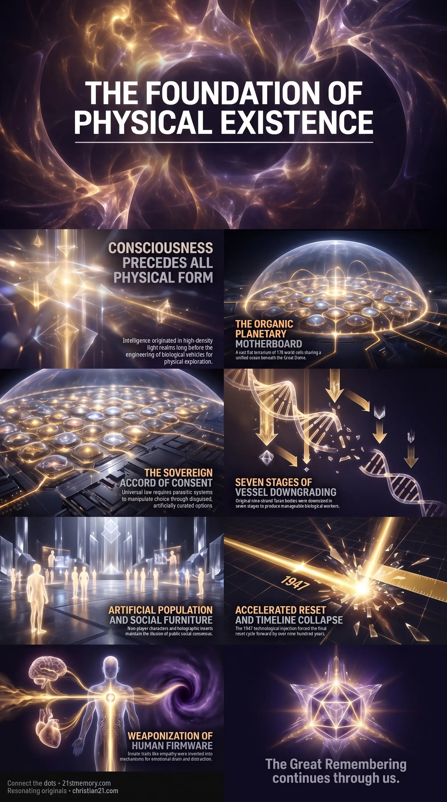

Roswell & Timeline Collapse
Roswell & Timeline Collapse — the 1947 Anakim strike on Orion Grey craft forced the point-contact transistor into public hands and collapsed the thousand-year custodial schedule.

Watch this series on YouTube — every video dubbed into 20 languages. Tap the settings gear on any video, then Audio track, to hear it in yours.
Roswell & Timeline Collapse — the 1947 Anakim strike on Orion Grey craft forced the point-contact transistor into public hands and collapsed the thousand-year custodial schedule.

The planetary motherboard simulation — the realm as an organic circuitboard of one hundred seventy-eight world cells under a Great Dome, with the Spirit Tree at Axis Mundi.

Point-Contact Timeline Fracture — leaked solid-state wreckage accelerated handheld connectivity and compressed the final reset cycle by over nine hundred years.
This transmission restores the foundational truth of physical existence, detailing how consciousness preceded physical architecture and how the current realm was systematically inverted. Individual intelligence emerged from innocent creation through the Source Creation of twelve Proximal Sols, who expanded the soul framework into four thousand unique architectures. The realm stands as an organic circuitboard housed within a sealed terrarium stack, designed for harmonic physical experience before parasitic intervention established an artificial control matrix.
The operational condition of the plane reflects a continuous cycle of artificial resets, demographic downsizing, and continuous scrolling geography designed to harvest human emotional energy. Downsized into Taran Human descendant bodies, true spiritual beings inhabit an environment populated by programmed artificial entities, synthetic legal fictions, and inverted harmonic structures. This restoration illuminates the operational mechanics of the simulation field, establishing the exact parameters required for direct memory activation upon the collapse of the electromagnetic suppression field.
Source Creation brought forth twelve Proximal Sols — twelve Source-created intelligences who expanded the soul framework into four thousand unique architectures. The original Taran vessels were nine-strand DNA hominid bodies with high-density perception and direct pineal communication with planetary aether. Following the initial invasion, biological structures underwent seven distinct anatomical downsizings, reducing physical height and closing prefrontal neural pathways to produce manageable biological workers, later downsized again into contemporary human forms. To maintain incarnation access without overriding field laws, four thousand ancient souls initiated mission insertion before planetary colonization. These architectures operate via an ark-pod protocol — the oversoul remains secured in stasis above the realm while steering lower-density avatars through lifetime iterations — and under the clueless protocol, incarnated avatars remain unaware of full operational parameters to prevent mission compromise within dense physical conditions.
Physical geography across the plane is generated through continuous scrolling rendering that shifts fluidly around observer attention. Major geographic nodes mapped on the Becker-Hagens UVG 120 Grid are mirrored and amplified across spatial corridors to create the perception of vast physical distances; motorways, expanse corridors and transit zones function as time-phased buffer overlays that stretch travel perception. The realm itself is a grown planetary motherboard: mineral deposits, hydrothermal quartz veins and magmatic ore reefs serve as traces and capacitors across its floor, while supermassive canopy trees act as vertical antennas drawing aetheric currents into subterranean crystalline storage. The plane is one low-density floor within a vast vertical cube of stacked frequency membranes — one hundred seventy-eight distinct world domains on the same continuous plane, isolated by localized firmament domes and ice barrier perimeters, with vertical movement between density sheets occurring through portal thresholds rather than horizontal travel. Portals exist in fixed geographic positions — Dyatlov Pass, Sedona — strictly guarded by specialized non-human entities, and as wandering aerial thresholds, where localized turbulence marks the transition between scrolling spatial overlays.
Control is maintained through the systematic inversion of organic structures into synthetic counterfeits. Organic spirituality was replaced with institutional religion. Harmonic stone architecture originally distributed aetheric current — natural energy flow built directly over planetary grid nodes — and that current was inverted into debt-based financial currency: banks were positioned over organic grid nodes to store and move paper currency as an inverted substitute for natural current, and cathedrals and financial districts operate as containment shells for dense low-frequency current. The legal system operates entirely through maritime admiralty law: the birth certificate establishes the Cestui Que Vie bond, backing currency with future physical labor, and localized conflicts, industrial health treatments and artificial famines are coordinated operations to liquidate those bonds upon vessel death while generating low-frequency emotional harvest. Around the individual, cultural delivery systems modulate emotional states and suppress pineal function — structural music scoring manipulates stress hormones, public education pipelines identify and direct specific intellectual attributes into classified access programs, and water fluoridation calcifies the pineal gland, locking endogenous dimethyltryptamine production and severing natural aetheric reception. The population furniture completes the enclosure: NPCs and holographic sleeves function seamlessly within routine social scripts but experience cognitive bypass when presented with core structural truths.
Planetary resets occur periodically to downsize biological vessels and erase historical memory, restocking cleared domains with cloned children gestated in subterranean facilities, introduced as orphaned populations and given manufactured historical storylines through structured educational curricula. The pre-reset Tartarian civilization built with piezoelectric granite dressed and positioned by acoustic levitation — architecture that operated as unpowered heating, lighting and wireless healing centers. Mainstream timelines injected up to two thousand fictitious years to obscure this recent global grid; following the 1728 reset, surviving Tartarian structures were stripped of their gold aetheric collectors and retrofitted as administrative facilities, banks and religious sites, and manufactured events such as world fairs were orchestrated energy-weapon demolitions designed to erase the architectural evidence from public memory. Against this machinery, genuine interventions also occur within the field law: the 1947 Roswell downing was not an accident but a deliberate Anakim strike — scans had revealed non-consensual genetic harvesting of human remains aboard mobile laboratory vessels — executed to force salvageable solid-state technology into human hands. It worked: the transistor's release shattered the custodial timeline, compressing the final cycle into the age of handheld connectivity.
This transmission functions as a foundational structural map within the living archive, placing current physical events into absolute cosmological context. It anchors the precise historical arc of the Taran soul lineage, tracing the transition from high-density organic creation through successive vessel downsizings and artificial resets. By exposing the mechanics of spatial overlays, entity classifications, and timeline manipulations, it provides the definitive baseline for interpreting all physical anomalies encountered during the current waking phase.
Within the larger framework of the Great Remembering, this record serves as the direct bridge between intellectual awareness and direct cellular recollection. The Resonating Army holds these core structural truths to stabilize the collective field as physical control systems dissolve. By dissolving perceived knowledge, legal fictions, and inverted religious constructs, this transmission prepares incarnated starseeds to maintain absolute stability during the final electromagnetic field collapse.
"Intelligence preceded physicality, meaning that the individual's 'idea' to create something, or to go somewhere, or to actually think for the sake of thinking, came before the physical brain that we wrongly assumed was required to actually think it with....in the first place."
"No field shall be overridden from outside itself once coherent structures have self-sustained harmonics within – help may be offered and support extended, but choice, and thus consequence, must arise from within."
"You can choose what you want, but your wants are chosen for you."
"This is carefully designed 'Noise' – it's all carefully planned 'noise' to accompany your already 'noisy' consciousness...they need that Noise there; that's why they 'put' it there."
This topic is free to share. Support the archive →